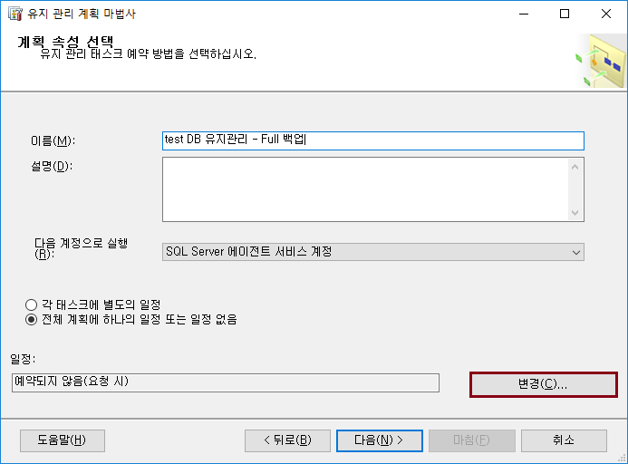

운영업무 자동화
유지 관리 계획 마법사
-
유지 관리 계획 마법사에서 어떤 작업을 할 수 있는지 알아보자.
-
유지 관리 계획 마법사로 간단하게 전체 백업을 구성하는 방법에 대해 알아보자.
유지 관리 계획 마법사 구성 방법
-
관리 > 유지 관리 계획 > 유지 관리 계획 마법사
-
전체 백업은 매월 15일 오전 4시에 수행되도록 설정 후 확인

-
SQL Server 에이전트 > 작업 > 새 작업
-
데이터베이스 백업(전체) 선택 후 다음
-
일반 > 데이터베이스 > test 데이터베이스 선택
-
대상 > "c:\temp" 으로 변경 후 확인
-
보고서 옵션에서 전자 메일 선택 후 다음
-
마침
-
생성된 유지 관리 계획 선택 > 실행
-
실행 완료
Let's Prcactice
-
유지 관리 계획 마법사에는 여러 가지 기능이 있다. 각자 하나씩 유지 관리 계획을 만들어 보자.
-
고객사에서 SQL Server 사용 중에 디스크가 Full 났을 경우, 어떤 조치 방법이 있을까? 그리고 이런 문제가 발생하지 않도록 예방할 수 있는 방법이 있을까?
처음으로
이전